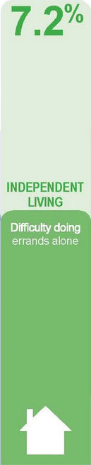
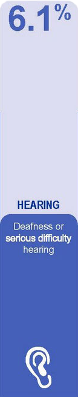
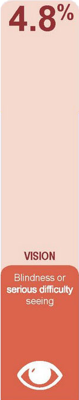
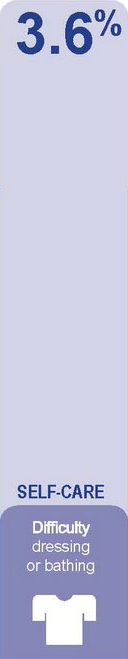
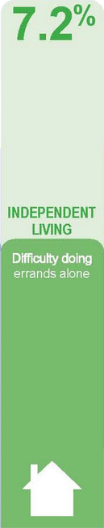
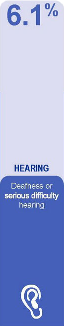
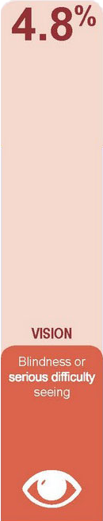
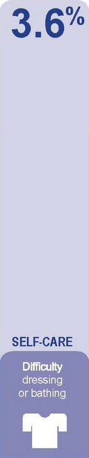

A11Y for Content
- Ensure all page sections have a descriptive heading, even if it's not visible.
Tip: Assign the class
[screen-reader-text]to include a heading but not be displayed for sighted users. - Use correct hierarchy/nesting for heading tags:
Heading 1
Heading 2
...some content here...
Heading 3
...some content here...
Heading 2
...some content here...
Tip: To apply a style associated with a specific heading tag, assign a CSS style named after the heading tag (".h2"), then add this class to the heading:
CSS: h2, .h2 {font-size:40px;}->
HTML: [h3 class="h2"] HEADING 3 [/h3]HEADING 3
- Use lists instead of paragraphs whenever possible.
- Provide a Table of Contents in a fixed sidebar for quick access to specific sections of content.
- Avoid abbreviations, such as U.S. states ("NJ", "PA"), months ("Jan"), days ("Fri").
- Spell characters out, such as "-" ("1 to 3"), "1st" ("first"), "ie" ("for example"), "etc" ("and so on" ).
- Write out full name for acronyms at least two (2) times, then use just the acronym along with
abbrtag after that - Avoid writing content in ALL CAPS.
Tip: To write normal text but display as uppercase, apply style:
text-transform: uppercase - Use descriptive and meaningful text for links, such as "Read more about web accessibility" instead of "Click here".
- Keep language simple and avoid jargon or complex words - "Submission received" versus "We Got Your Feedback"